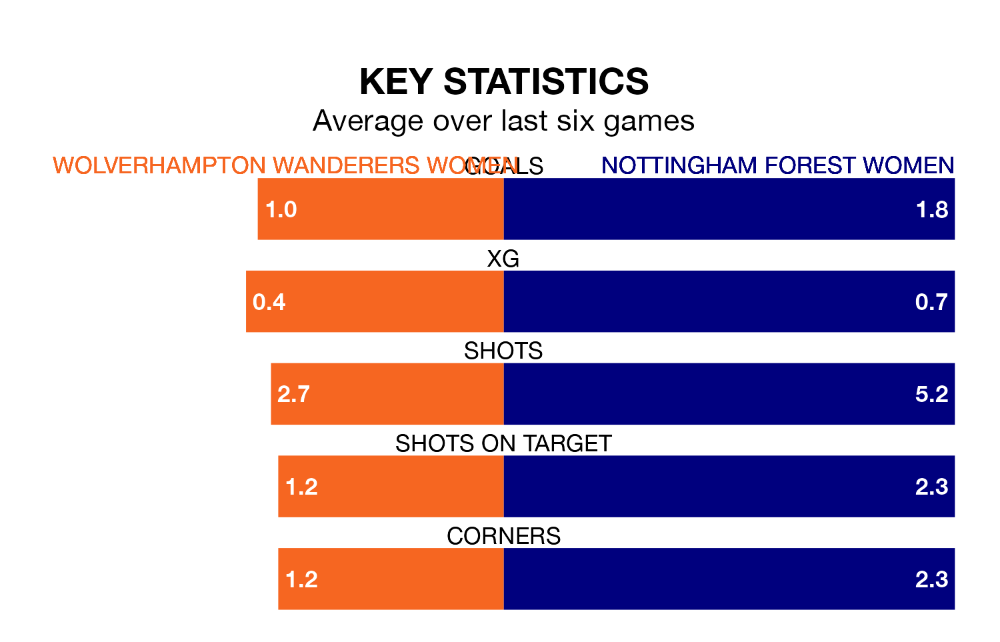

Two of the Women's National League Premier Division North's top sides face each other in Sunday's early kick-off, when fourth-placed Wolverhampton Wanderers Women host second-placed Nottingham Forest Women.
Wolverhampton Wanderers have picked up six wins and four draws from 12 games so far this season, and sit eight points below the visitors going into the 2pm match.
Nottingham Forest, meanwhile, have won nine and drawn three of 15, picking up 30 points.
With 40 goals in 15 games so far this season, Nottingham Forest are the league's second-highest scorers with 2.7 goals per game. And they are conceding fewer than average, letting in 11 goals at a rate of 0.7 per game.
Wolverhampton Wanderers are also above average scorers, with 1.8 goals per game, compared to a league average of 1.7. They have conceded 0.6 goals per game.
In the last 10 years, Wolverhampton Wanderers and Nottingham Forest have played each other on eight occasions. Wolverhampton Wanderers won four of them, Nottingham Forest three, and they drew once.
On average, Wolverhampton Wanderers scored 1.6 goals and Nottingham Forest 1.9 in those matches.
Their last meeting was on November 5, when Nottingham Forest won 2-0 at home.
The home team are in mixed form in the Women's National League Premier Division North, with two wins and three draws from their last six games.
With three wins and three draws over that period, the visitors' form is better – they have taken 12 points from 18, compared to Wolverhampton Wanderers' nine.
Wolverhampton Wanderers' last match was on March 3, a 3-0 win against Liverpool Feds.
Nottingham Forest beat Halifax Women 3-0 last time out, also on March 3.
Updated: 09:34 (UTC), 08/03/24